Начало работы
Основные элементы интерфейса
Основным способом работы с ГИС является использование графического пользовательского интерфейса.
Если вы только начинаете работать с QGIS, то у вас не будет отображаться панель с перечислением недавних проектов.
У нас с вами есть два специфичных для ГИС понятия, с которыми мы будем постоянно встречаться:
слой - как правило, это набор однотипных объектов, хранящихся в одном файле, или растровый файл с геопривязкой, или подключение к удаленному источнику (картографическому сервису или базе данных);
проект - это ваш сеанс работы, в котором хранится информация о всех открытых в данных момент слоях, их стилях, макетах и геомоделях.
Если ваша панель инструментов отличается от того, что на картинке, то не пугайтесь: у меня установлены некоторые модули, которые добавлены туда. Впоследствии некоторые эти модули появятся и на вашей панели инструментов.

- панель Браузер отображает все доступные вам источники данных как локальные (файлы на вашем компьютере), так и удаленные (базы данных и подключение к картографическим сервисам);
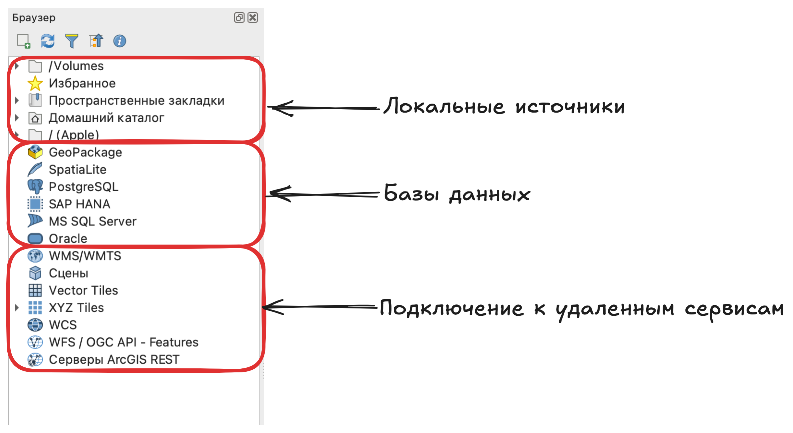
- панель Слои будет отображать все открытые в данный момент слои вашего проекта.
Если вы закрыли панель браузера и/или панель слоев, то вы можете открыть их снова из строки меню: Вид \(\longrightarrow\) Панели \(\longrightarrow\) Браузер или Слои.
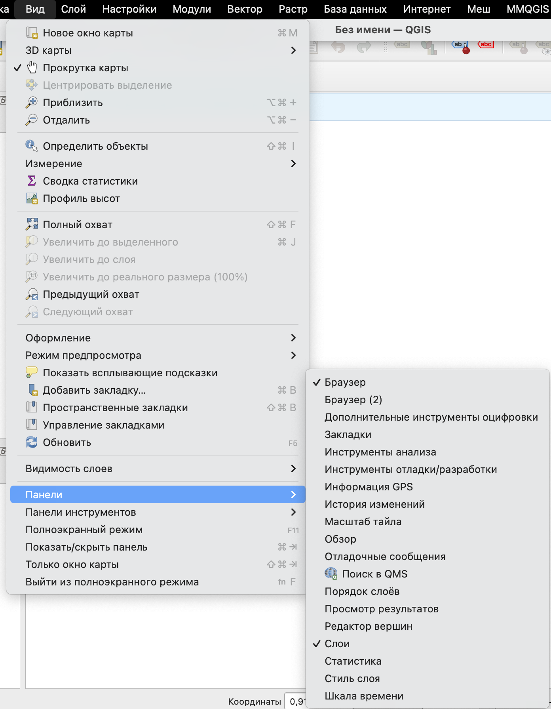
После того как вы создадите свой первый пустой проект вы увидите пустое рабочее пространство, которое в некоторых контекстах и документации может называться холстом.
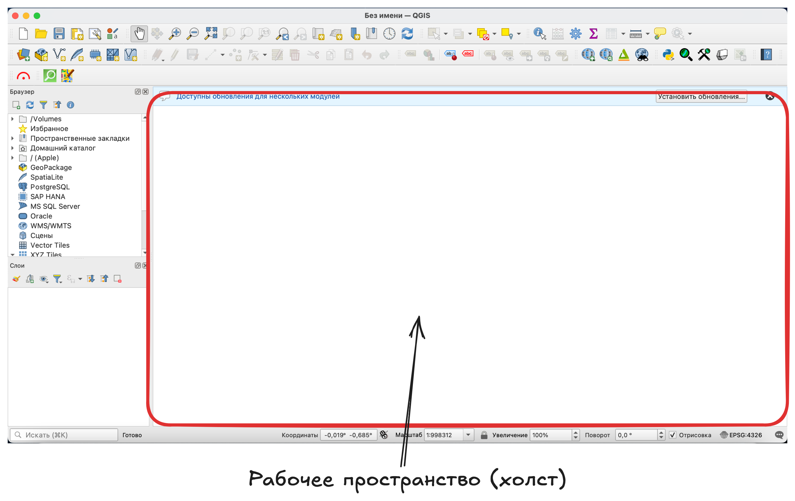
На основной панели инструментов, как правило, отображаются базовые инструменты работы, некоторых из которых подписаны на картинке. Она может дополняться как некоторыми инструментами из основного набора, так и некоторыми инструментами из дополнительных модулей.
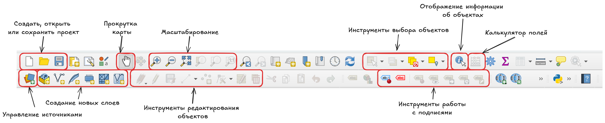
Что такое модуль?
Это либо дополнительные инструменты для расчетов, которых нет в базовом наборе, либо инструменты, предоставляющие возможность взаимодействия с удаленными источниками (например, загрузка данных).
В нижней части окна есть некоторые дополнительные инструменты взаимодействия с рабочим пространством.
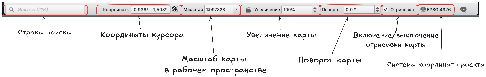
строка поиска позволяет искать искать объекты по названию1;
далее показаны координаты вашего указателя мыши в системе координат проекта, по клику на значок мыши справа вы можете переключить эту строку в режим отображения охвата (то есть минимальных и максимальных координат видимой в рабочем пространстве карты)2;
масштаб, который может быть выбран из линейки стандартных (из выпадающего списка) или задан числом с клавиатуры;
увеличение позволяет увеличить изображение видимого фрагмента карты без изменения масштаба (как увеличительное стекло), требует фиксации масштаба кликом на значок замка;
поворот карты, который задается в градусах по часовой стрелке от направление на север;
включенная опция отрисовки карты значит, что изображение видимого в рабочем пространстве фрагмента карты будет меняться при перемещении и/или масштабировании, если вы ее отключите, то зафиксируете содержание карты;
система координат проекта.
Система координат проекта в первую очередь задает систему координат для той карты, которую мы видим в основном рабочем пространстве, кроме того, в ней могут осуществляться некоторые расчеты (в зависимости от инструмента).
Эта система координат не зависит от систем координат слоев и считается внешней для них.
Добавление подложки на карту
Для начала работы добавим в наш проект подложку.
Подложкой в ГИС называют то, что используется как фоновое изображение, как правило, это может быть карта в виде тайлов или какое-либо изображение (спутниковый снимок, растр с геопривязкой).
Подложка необходима для добавления контекста на карту, возможности ориентирования на местности, а также она может выполнять эстетическую функцию при подготовке и оформлении карт.
По умолчанию на панели браузер нам доступны два варианта подложек в формате XYZ Tiles:
OpenStreetMap - подложка на основе данных OpenStreet Map;
Mapzen Global Terrain - подложка на основе сведений о рельефе.
По двойному клику левой кнопкой мыши вы можете добавить любую из них.
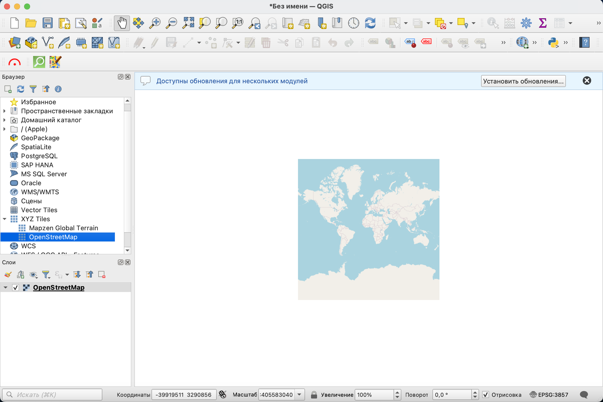
После добавления она должна появиться в рабочем пространстве и в панели слоев.
Обратите внимание, что слева от названия подложки в панели слоев нарисован квадратик с разноцветными ячейками, это значит, что слой растровый.
При необходимости вы можете сами создавать и настраивать подключения к картографическим сервисам.
Модуль QuickMapServices
Если подложек по умолчанию вам недостаточно, то вы можете как настроить новые подключения к другим сервисам, так и воспользоваться модулем (плагином) QuickMapServices, который предназначен для добавления геосервисов и базовых карт.
Информацию о всех доступных модулях вы можете посмотреть на официальном сайте репозитория - https://plugins.qgis.org/
Для установки модуля в строке меню нужно выбрать Модули \(\longrightarrow\) Управление модулями, после чего вы увидите окно репозитория (возможно понадобится пара секунд, чтобы в нему подключиться), в котором можно найти интересующий вас модуль и установить.
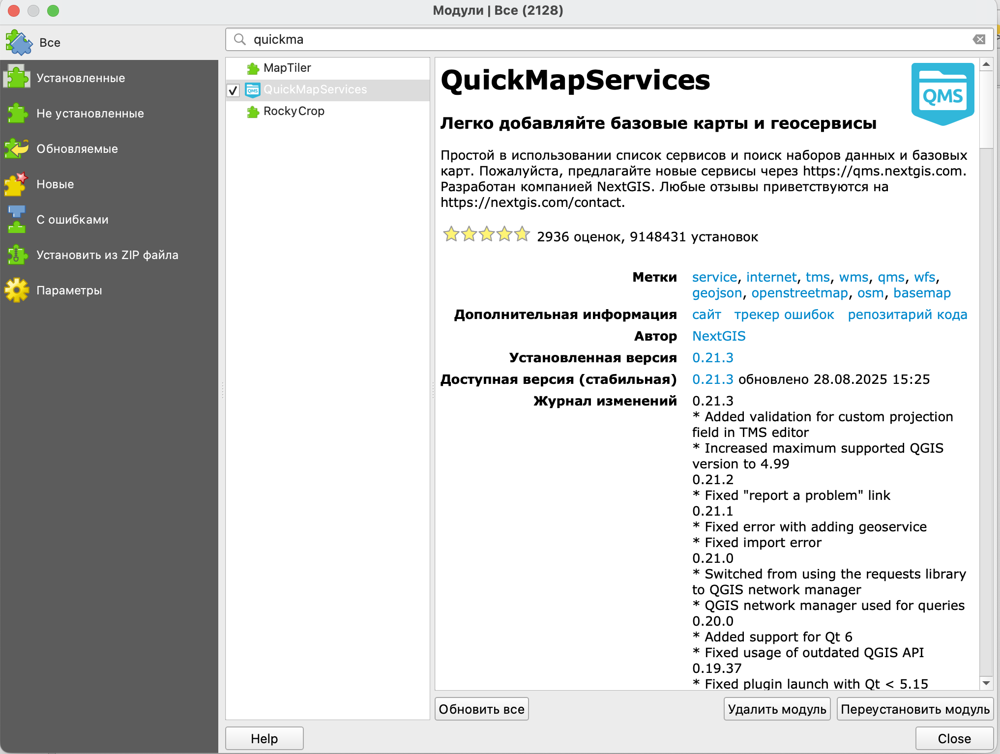
В том случае, если по какой-то причине вы не можете подключиться напрямую к репозиторию из программы и установить нужный вам модуль, вы можете скачать архив с модулем с сайта https://plugins.qgis.org/ и установить его, воспользовавшись опцией Установить из ZIP файла.
После успешной установки модуля у вас в правой части окна появится панель поиска геосервисов, где вы можете искать их по текстовому запросу.
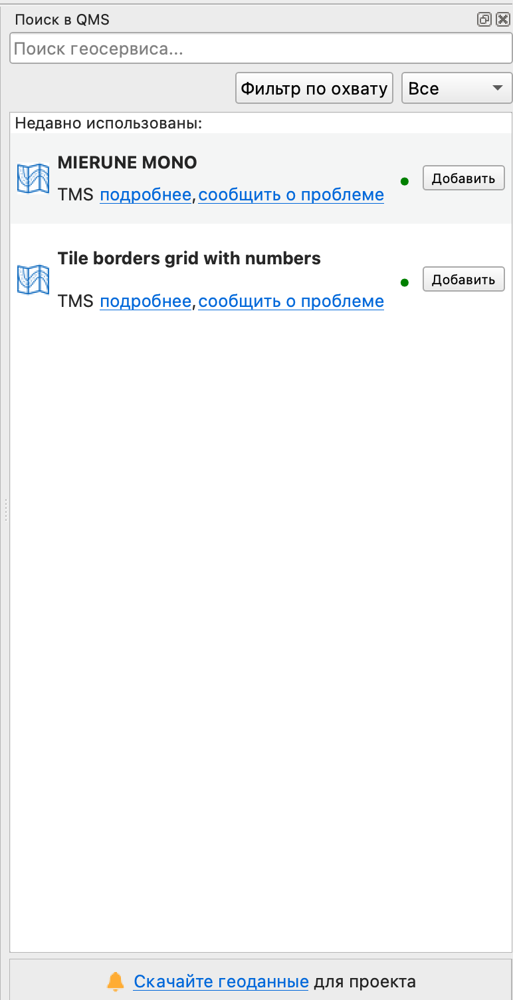
Если вы не хотите этого делать, панель можно просто закрыть.
Также на вашей основной панели инструментов должен появиться значок  , по клику на который вы увидите перечень доступных вам геосервисов и базовых карт.
, по клику на который вы увидите перечень доступных вам геосервисов и базовых карт.
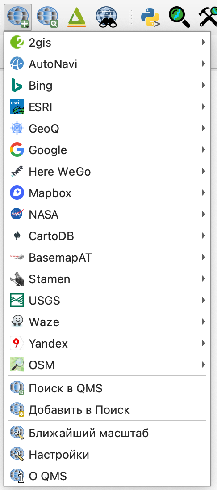
При первой установке модуля у вас не будет такого большого перечня, как показано на картинке. Если вы хотите открыть к нему доступ, то вам нужно перейти в настройки модуля и открыть вкладку Загрузить сервисы (Load more services).
В этом окне вам нужно нажать на кнопку Получить дополнительные источники данных (Get contributed pack), согласиться с условиями их предоставления и сохранить настройки.
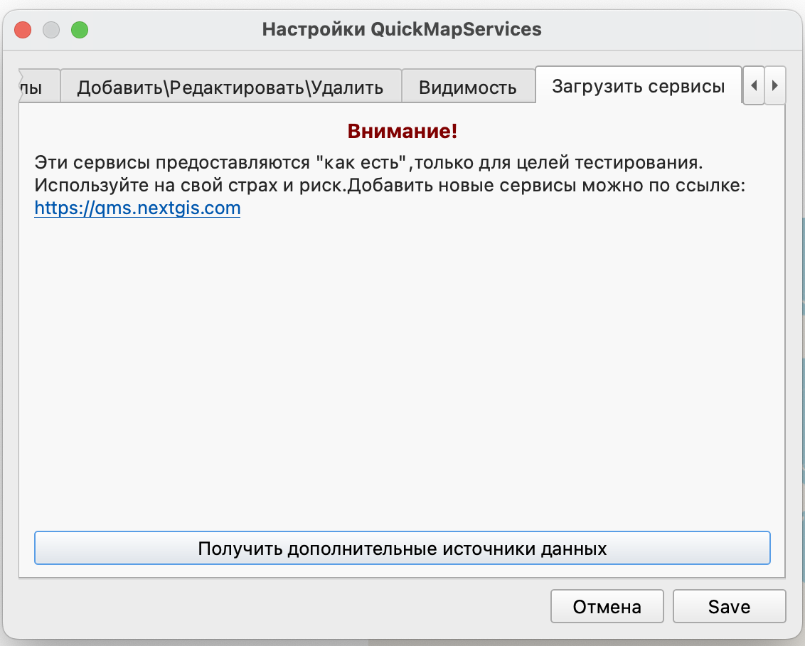
Со списком всех доступных сервисов можно ознакомиться по ссылке https://qms.nextgis.com/
Для более подробного ознакомления можете воспользоваться видео от разработчиков.
Возможно после открытия новой подложки она появилась у вас в перечне слоев, но не видна на карте, это происходит из-за того, что отрисовка слоев ведется в том порядке, в котором они перечислены, то есть слои ниже по списку находятся под более верхними слоями, которые их закрывают.
При необходимости вы можете поменять порядок слоев, просто перетащив один из них в списке выше или ниже, или отключить видимость верхнего слоя, убрав галочку из чекбокса.
Настройка базовой карты
Так как базовые карты подложки у нас растровые, то настройка их стиля довольно ограничена, хотя вы можете сделать так, чтобы они отвечали общему стилю и задумке вашей карты.
Настройки стиля можно найти в свойствах слоя, которые открываются либо двойным кликом по названию, либо из контекстного меню, полученного кликом правой кнопки мыши.
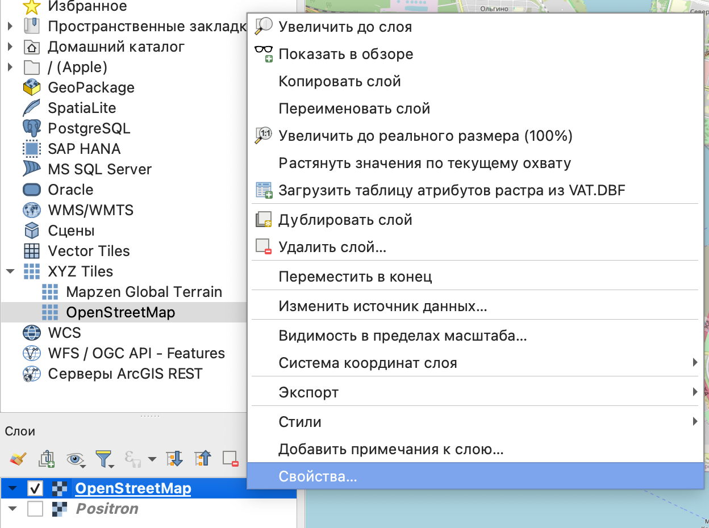
В свойствах вы увидите несколько пунктов, нас интересует пункт Стиль.

Черно-белая подложка
Если вы хотите получить черно-белый вариант цветной подложки, то вы можете снизить насыщенность до минимума.
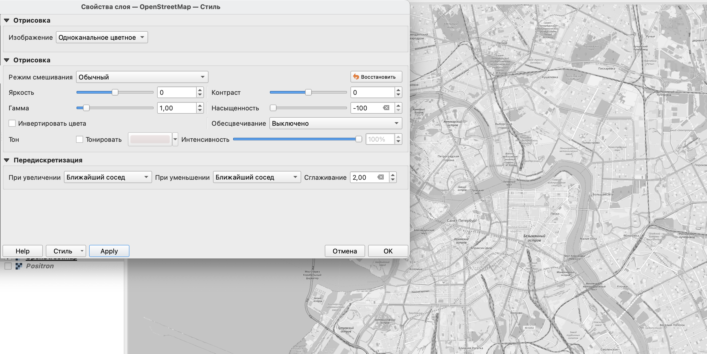
Вторым способом будет добавление обесцвечивания.
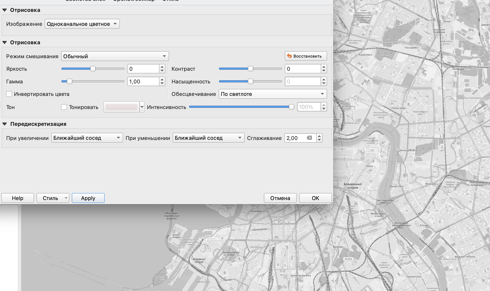
Если вы обесцветите изображение, а потом инвертируете, то вы получите темный вариант подложки.
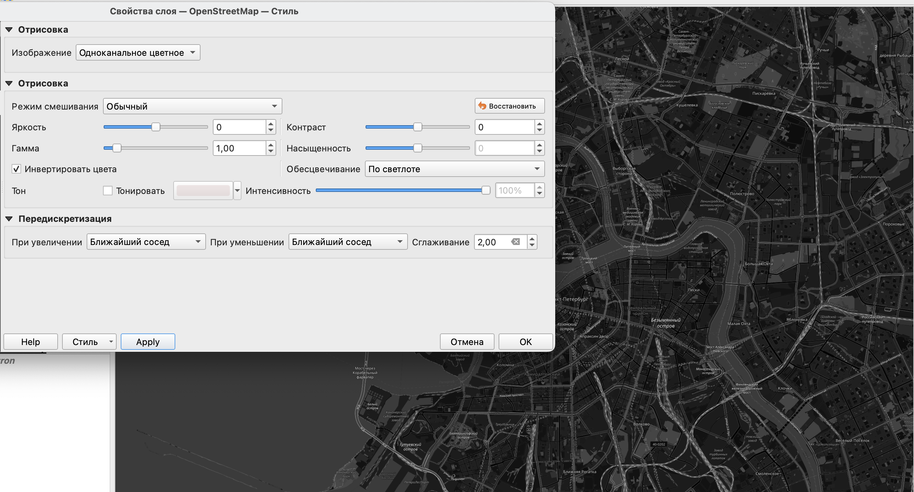
При использовании преимущественно монохромной подложки инвертирование превратит светлую карту в темную и наоборот: темную в светлую.
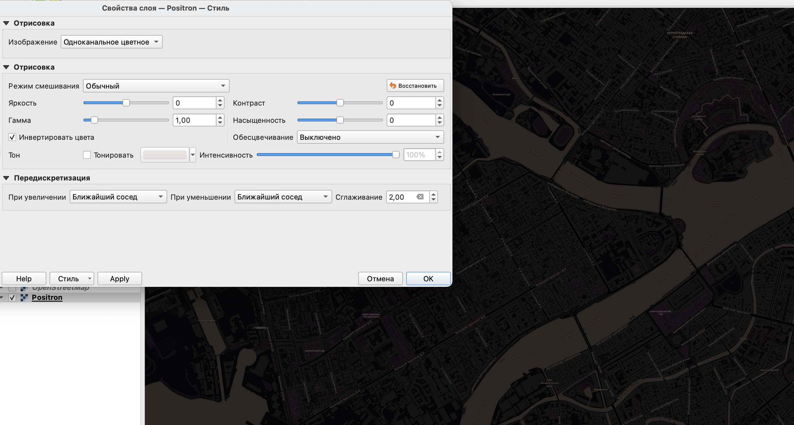
Тонирование карты
Подложку как любое растровое изображение можно тонировать в тот оттенок, который вы посчитаете нужным.
Для этого нужно поставить галочку слева от слова Тонировать в настройках стиля и выбрать нужный цвет. Настройка интенсивности здесь позволяет выбрать степень тонирования.
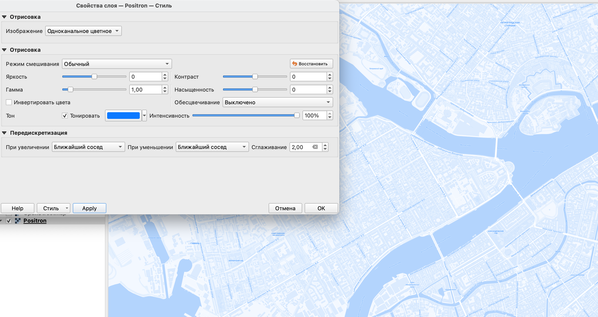
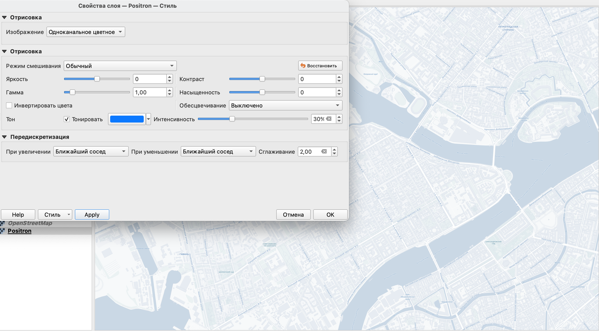
Использование одновременно нескольких настроек позволяет добиться дополнительного художественного эффекта.
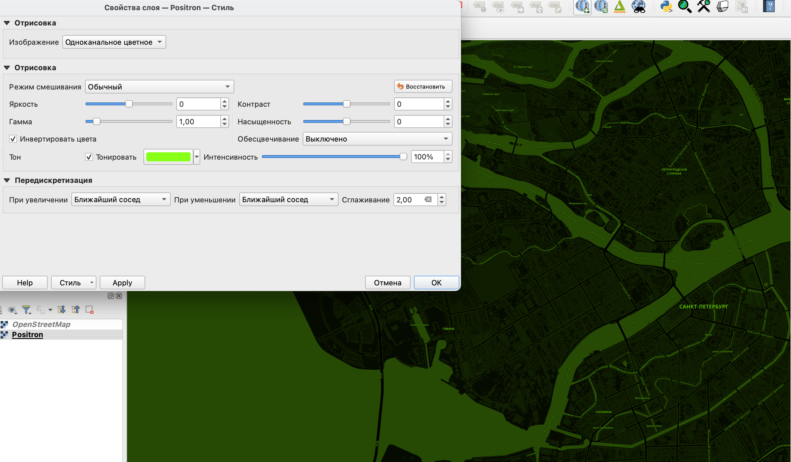
Сноски
https://docs.qgis.org/3.40/en/docs/user_manual/introduction/qgis_gui.html#locator-bar↩︎
здесь заложены некоторые “пасхалки” от разработчиков, почитать про них можно (на англ.) https://www.geographyrealm.com/qgis-easter-eggs/ или (на русском) https://cartetika.ru/tpost/1h9c4oc5o1-pashalki-v-qgis↩︎